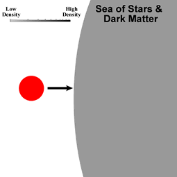

The orbits of objects such as globular clusters and satellite galaxies carry them through the extended dark matter halo (dark halo) and sometimes the dense central regions of their host galaxies. As a satellite moves through this ‘sea’ of stars and dark matter, it experiences a drag which slows it down. This drag is referred to as dynamical friction.
The drag results from the satellite accelerating stars and dark matter in its wake – thus increasing their energy and momentum. As a consequence of the conservation of energy and momentum, the satellite itself must therefore lose energy/momentum and slow down. Over time, this causes the satellite to spiral in towards the centre of the host galaxy. This is one of the main driving mechanisms for minor mergers.
The dynamical friction experienced by a satellite depends on:
- Mass – Massive satellites have greater effect on their surroundings and therefore feel a greater dynamical friction.
- Density – Dynamical friction is greater in high density regions of the host galaxies since there are more stars/dark matter to absorb the satellite’s energy and momentum.
- Velocity – Dynamical friction is small at high and low velocities and greatest at intermediate velocities. At low velocities, the satellite is affected by stars/dark matter both ahead of and behind itself in near equal amounts. This results in a low dynamical friction. At high velocities, the satellite passes through the dense regions of the host galaxy so rapidly that there is little time for host galaxy stars to be accelerated – again resulting in a low dynamical friction. It is at intermediate velocities that matter in the satellite’s wake is preferentially accelerated for periods long enough to have a significant effect.
Galaxies moving through the extended dark matter halos of groups and clusters also experience dynamical friction, albeit at much lower levels than that experienced by objects orbiting within galaxies.